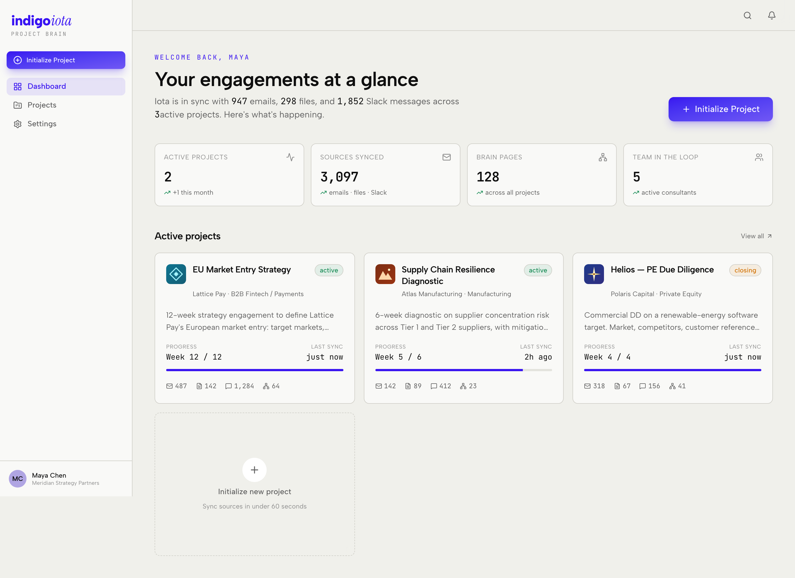
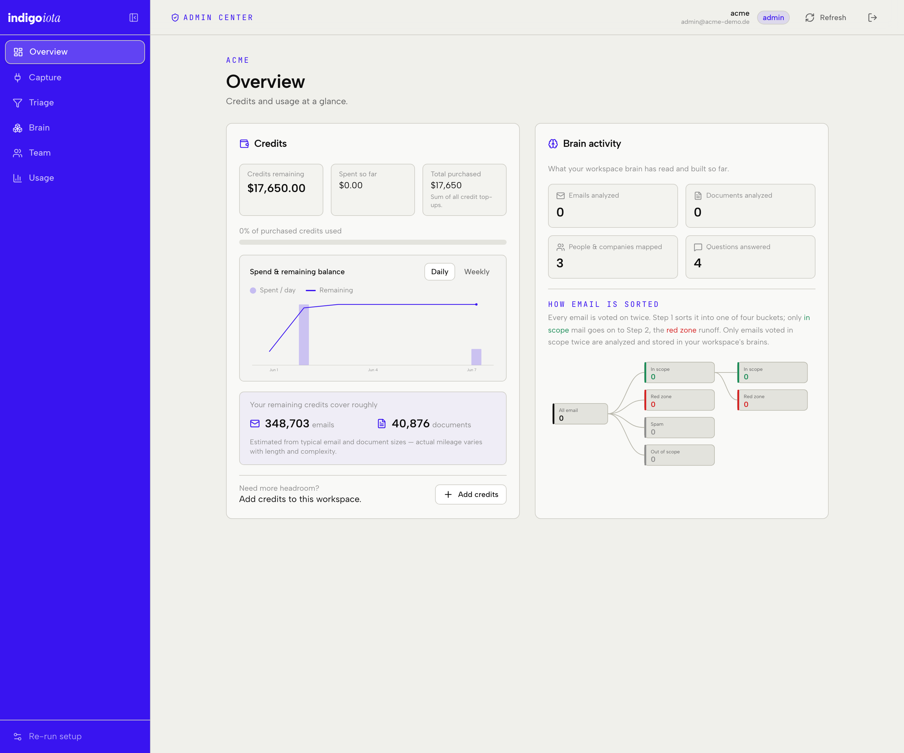
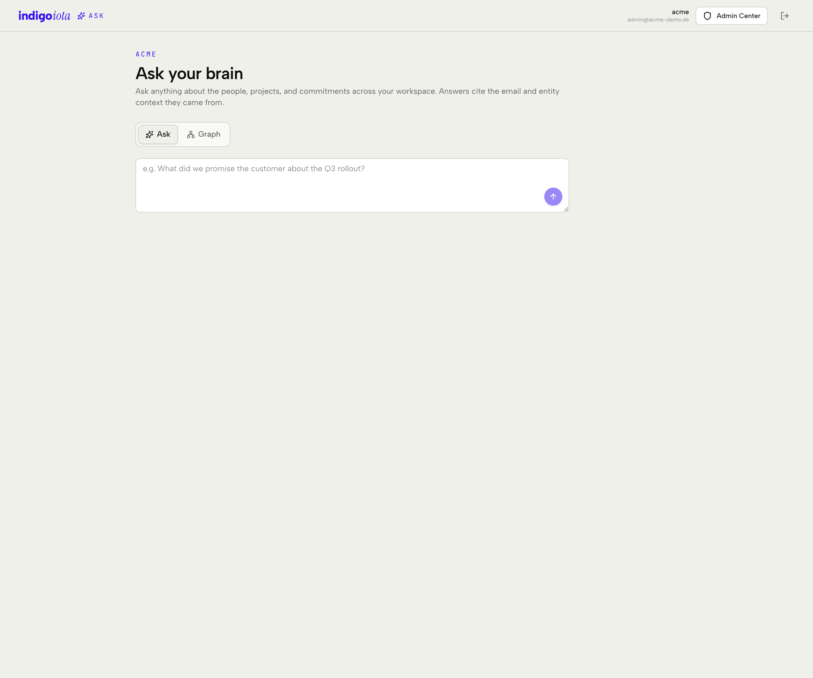
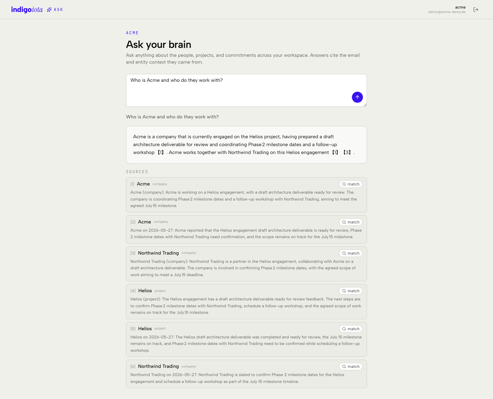
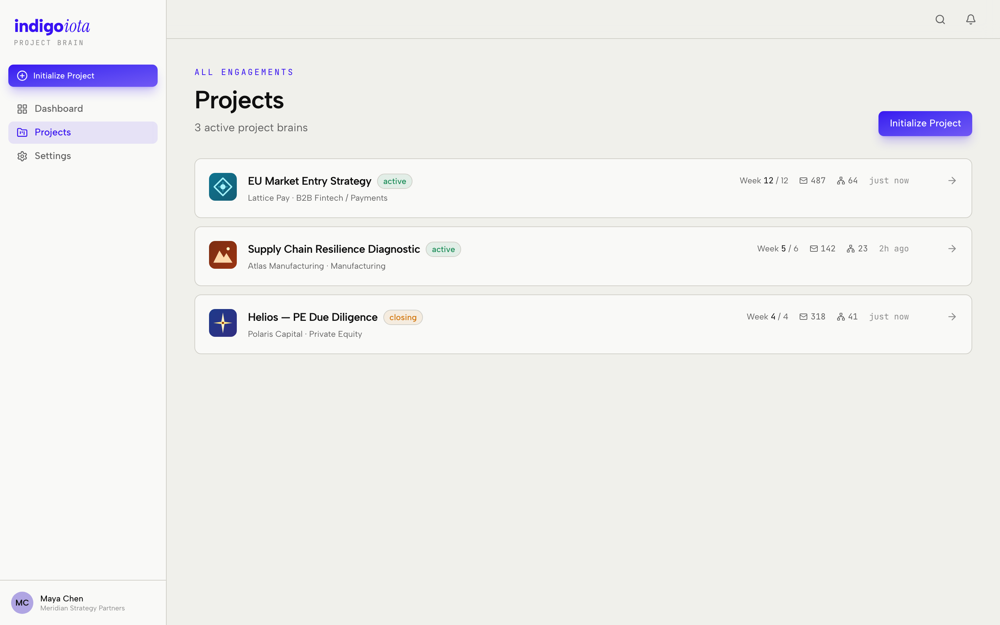
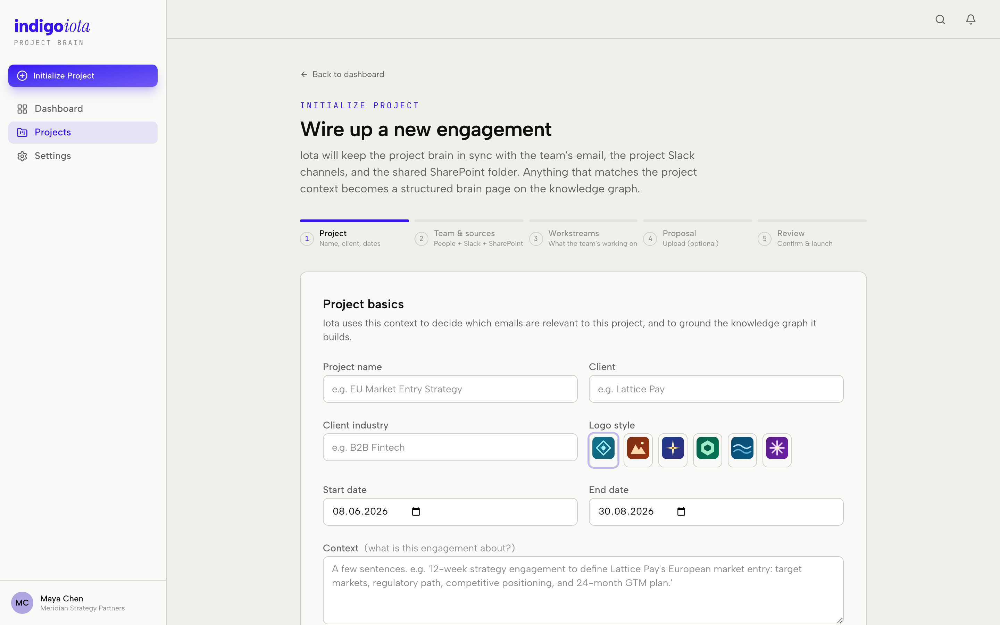
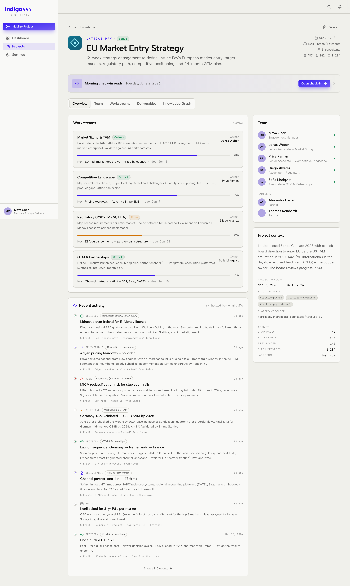
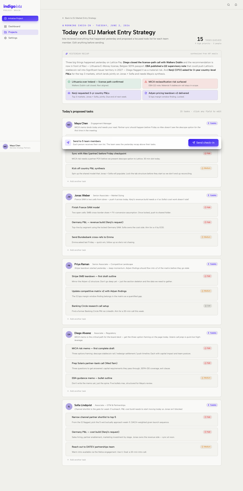
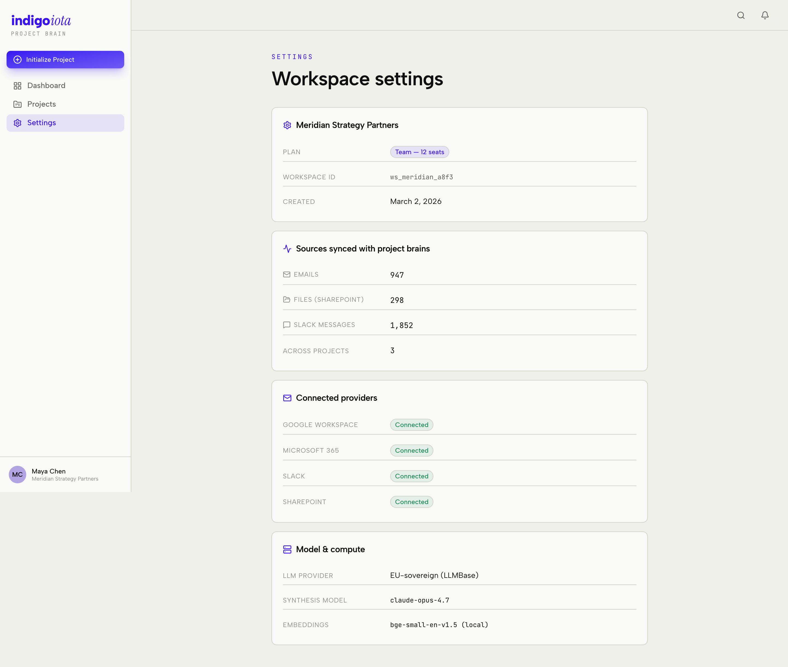
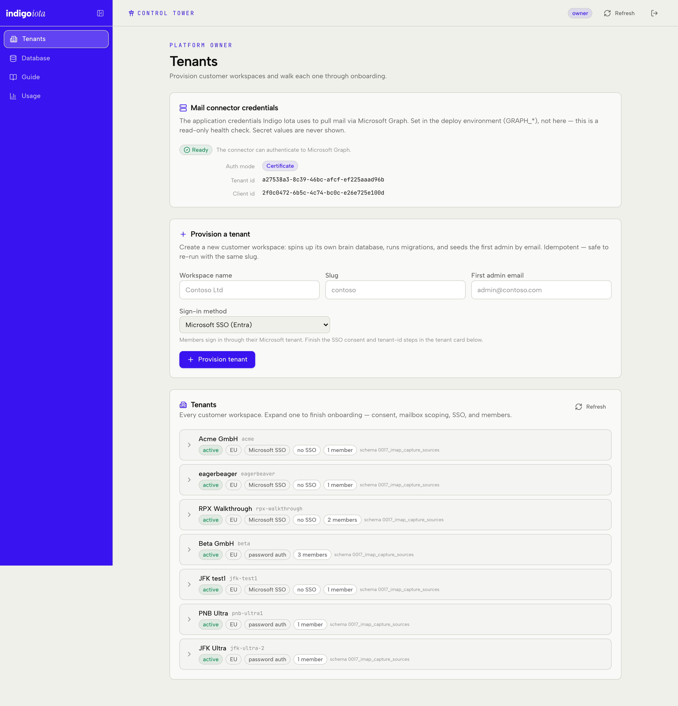

Chapter 4
Every page, and what you can do on it
The website has nine screens. Every screenshot below is the real app running on a laptop — not a mock-up of a mock-up. For each one you'll see what it shows, what buttons actually do, and whether it's wired to the live backend or is a polished demo of a feature not yet connected.
How to read the tags
live — this screen sends real HTTP requests to the backend and shows real
database data. Changes stick.
demo — this screen runs entirely in the browser from canned data
(frontend/src/lib/mock/data.ts). It's for showing the intended experience; nothing is saved.
Where the data comes from (two wires)
Every page pulls its data down one of two wires. Knowing which wire a page uses tells you instantly whether it's live or demo:
| The wire | What it is | File | Used by |
|---|---|---|---|
| the API client | A small set of functions that make real HTTP calls to the backend (me(),
ask(), credits()…). |
frontend/src/lib/api.ts |
Admin, Ask |
| the demo store | An in-browser store of fake projects, seeded from a fixtures file. Lives only in memory. | frontend/src/lib/store/projects-store.tsx + lib/mock/data.ts |
Home, Projects, New, View, Check-in, Settings |
The shell every page sits inside
Before the individual pages: all of them are wrapped in one shared frame called the AppShell
(frontend/src/components/app-shell.tsx) — the persistent left sidebar and top strip you see in
every screenshot. The actual page just fills the middle. The very outermost wrapper,
frontend/src/app/layout.tsx, loads the fonts and the demo store once for the whole site.
1 · Home demo route / · file src/app/page.tsx

What it is: the front page you land on after opening the app. It surfaces one featured project (the "LatticePay" demo engagement) with summary tiles and recent activity.
What you can do: read the overview and click through into the project. The numbers and activity are illustrative.
Under the hood: reads useProjects() from the demo store and a fixed
latticePayProject object from lib/mock/data.ts. No backend call.
2 · Admin Center live route /admin · file src/app/admin/page.tsx

What it is: the genuine operator console, and the most "real" screen in the app. If you
aren't signed in it shows a sign-in card (Microsoft SSO, native email + password + authenticator, or a dev
shortcut). A brand-new workspace then runs a six-step setup wizard
(onboarding-wizard.tsx): Team → Connect → Credits → Triage → Brain → Activate. Once onboarded it
switches to the steady-state tabbed dashboard (admin-dashboard.tsx). Each tab is
its own panel under frontend/src/components/admin/ and calls the backend.
| Tab | What it shows / does | Panel file |
|---|---|---|
| Overview | Credits at a glance + a "brain activity" summary (emails analysed, entities mapped, questions answered). | admin-dashboard.tsx |
| Capture | Add the mailboxes to pull (Microsoft or IMAP) + the Exchange access-policy command, and watch sync status. | capture-sources-panel.tsx · ingestion-panel.tsx |
| Triage | Review and sign off the "what's in scope" rules — the hard gate before any mail is pulled. | scope-approval-panel.tsx · scope-panel.tsx |
| Brain | Confirm the entity types (ontology) and add optional seed entities. | ontology-panel.tsx · starter-entities-panel.tsx |
| Team | Invite and manage members + their roles (admin / consultant / viewer). | members-panel.tsx |
| Usage | The rebuilt spend view — ingestion-vs-Q&A over time, broken down per member, in $ or tokens. | spend-by-user-panel.tsx |
3 · Ask live route /ask · file src/app/ask/page.tsx


What it is: the question box over the project brain. You type a natural-language question; the backend retrieves the relevant pieces of the brain, hands them to the AI, and the AI writes an answer that cites its sources.
What you can do: type a question and submit it. You get back prose plus a list of numbered sources you can expand. This is real Retrieval-Augmented Generation against the live tenant database.
Under the hood: calls api.ask(question) → backend route /api/qa/ask.
The answer and its sources are real. Chapter 5, flow C follows this
request all the way down and back.
4 · Projects demo route /projects · file src/app/projects/page.tsx

What it is: a grid of all engagements. What you can do: browse and open
one, or start a new one. Under the hood: useProjects() from the demo store —
the list lives in the browser only.
5 · New project demo route /projects/new · file src/app/projects/new/page.tsx

What it is: a multi-step form for spinning up a new engagement (name it, set scope, pick connectors). What you can do: fill it in and "create" — which adds a project to the in-browser store for the rest of the session. Under the hood: pure demo; in the real product this would drive the onboarding/connector setup described in the data model.
6 · Project view demo route /projects/view · file src/app/projects/view/page.tsx

What it is: the "inside one project" view — the visual showcase of what a finished brain
looks like: entity cards, a timeline, and a knowledge-graph visual. What you can do: explore
the tabs and entities. Under the hood: useProjects() demo data. This is the
demo counterpart to the real data you saw on the live Ask page.
7 · Check-in demo route /projects/check-in · file src/app/projects/check-in/page.tsx

What it is: a status-digest screen summarising recent movement on an engagement. What you can do: read the summary. Under the hood: demo store; illustrates a planned recurring report.
8 · Settings demo route /settings · file src/app/settings/page.tsx

What it is: account / workspace preferences. What you can do: view the
intended settings layout. Under the hood: reads allProjects from
lib/mock/data.ts; not wired to the backend.
9 · Control Tower live route /control · file src/app/control/page.tsx · owner-only

What it is: the cross-customer admin surface you (the platform operator) use,
gated by the owner passphrase (require_owner) rather than a workspace login. Four tabs:
| Tab | What it does | Panel file |
|---|---|---|
| Tenants | Provision a new customer workspace and walk each one through onboarding; shows whether the shared Microsoft connector credentials are present (never their values). | tenants-panel.tsx · connector-status-panel.tsx |
| Database | A read-only inspector to browse the databases behind every workspace. | db-browser-panel.tsx |
| Guide | Three reference docs: the onboarding runbook, a from-scratch authentication explainer, and this codebase explainer. | onboarding-guide-panel.tsx · auth-basics-panel.tsx |
| Usage | Platform-wide raw spend (before customer markup), per workspace and per member. | platform-usage-panel.tsx |
The whole map at a glance
| # | Page | Route | Status | Data wire |
|---|---|---|---|---|
| 1 | Home | / | demo | demo store |
| 2 | Admin | /admin | live | API client |
| 3 | Ask | /ask | live | API client |
| 4 | Projects | /projects | demo | demo store |
| 5 | New project | /projects/new | demo | demo store |
| 6 | Project view | /projects/view | demo | demo store |
| 7 | Check-in | /projects/check-in | demo | demo store |
| 8 | Settings | /settings | demo | demo store |